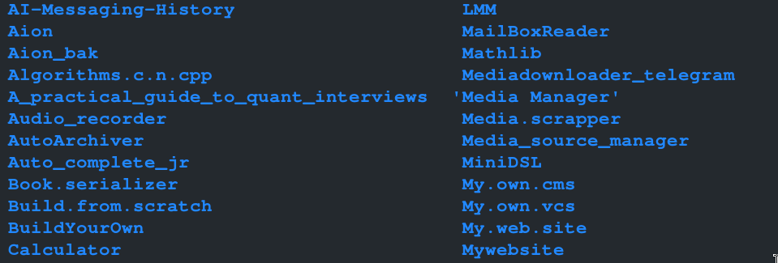

A hash function for meaning?
If you have been writing code for a while then I am sure you are familiar with this common developer experience: Startup on some project with all loads of excitement then…. forget it exists quarter way before you are there (if you have any defined progression anyway), just so to jump onto the then more exciting project.. or.. move on to sth else.
I personally had to clean out a folder of many such half complete projects last week. But one thing I noted, and I am sure with this you too are familiar.. there were, multiple instances of the same idea for a good number of the project folders.
Now that could be an interesting rabbit hole to dive into. The idea that, even when most excitement driven projects die, the ideas for some keep recurring disguising themselves to the dev, as 'new cool ideas'. But this isn't my concern here. Mine is about how to make it so that the duplication does not happen. Why is it so one cannot tell they already have that idea half implemented somewhere.
Initially, you have genuinely forgotten and really believe its a new idea from a 'new' frustration. Setting off a pattern of creating clones and clones and clones of half finished projects.
Then as time goes on you grow to learn some of these your 'new ideas' just don't stop recurring. But, now you have so many of the clones of clones from earlier stages. Each under its own name. Some as short as 'KMM'. Others a bit long. But none long enough to remind you of the detailed description.

So you wonder, (like I did), seems naming alone can't solve this.. (wc is true)
A software project's description is hard to compress into a single word that captures all its meaning. A word conscise enough that, when you come back to the same folder years later, you can read it and know this new idea you were about to create a new folder for isn't new at all. It already has a base implementation waiting for more blocks. I mean, even when meanings grow as projects grow, the core problem being solved doesn't shift much.
Now I was thinking, how do I solve this problem…(without AI).
I was wishing there was a sha1 for meaning. That there was this function which, you'd give it some fuzzy description for some random thing and it would spit out a hash. Then you would map any new idea to this hash to detect duplicates and calculate idea recurrence metrics.
Say for instance Hash(local internet) equals Hash(localhost google) equals hash(OfflineNet)
But then, hashes by definition only work with content. Not meaning. So I'd hit a wall. There was, it seemed, no 'scriptable' way out of this, other than the AI I was avoiding.
So I was like wait, if AI can do it, how does it? How is AI able to infer similarity in meaning from different descriptions of 'the same thing'? Oh, yeah, by the way, search engines do that too. How are they able to bring up relevant results based on key words (some of which results don't contain the keyword at all but do contain what it means).
Ding.. Ding Semantic search…
I already know about semantic search. Reading up about its implementation connected directly to AI. Which small discovery was also interesting. I was conflating AI with LLMs as is common today. LLMs are an AI implementation. AI is not LLMs.
Scripts leveraging the fundamentals of it can be scripted into humble services that don't need a chat box to work. Including one that solves my project duplication problem.
So I set out to learn about Semantic Search, Cosine similarity precisely. That's the hash for meaning.. or the closest analogy to what hash functions do anyways..
Now here's what I think the solution will be like when I build it out. Ill have to create a standard metadata document for each project in the project's folder. There will be a script to do this with. After filling in all the details, the script create the magic hash and do its comparison magic. The script will then point me to the duplicate. It will also increment my 'returned to idea' metrics. Date and count.. At least thats how I project it will be implemented (if I get to it..)
Adios, off to learn about vectors and matrices. Or, so I hope..